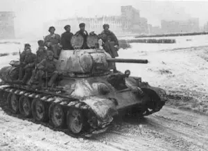

Welcome to Story in Conflict! Explore how the history of war shaped the world, revealing lessons on peace and diplomacy over the centuries.
Here you will find information even about post-war and war crimes!

Soviet soldiers on a T-34 in the Second Battle of Kharkov, May 1942.